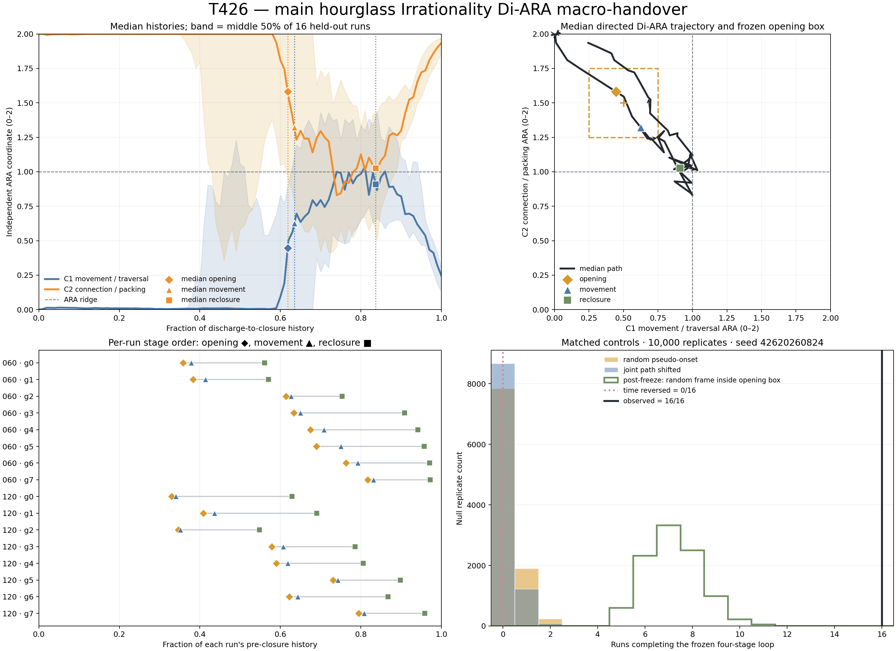
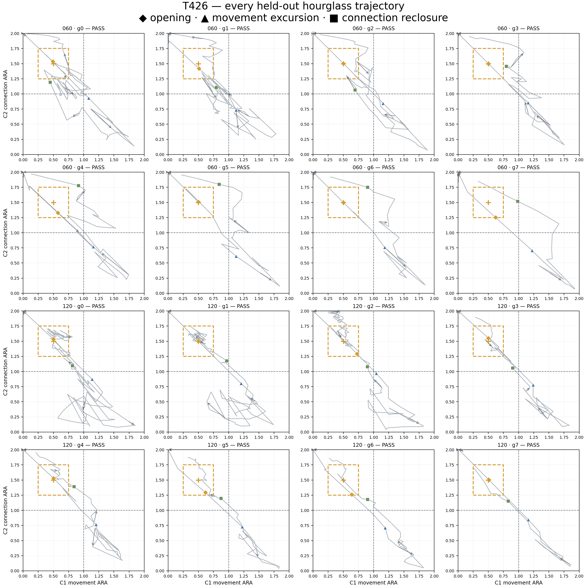

T426 — main Irrationality Di-ARA handover
Frozen follow-up on 16 held-out Toyoura-sand hourglass discharges. The opening is anchored to the first independently observed downstream-flow frame.
connection-heavy → opening near (0.5, 1.5) → movement excursion → connection-heavy reclosure
16 / 16complete ordered loops
(0.501, 1.500)median opening coordinate
0.083 sopening → movement
0.850 smovement → reclosure

Frozen and diagnostic controls
| Control | Mean completed runs | 95th percentile | p for 16/16 |
|---|---|---|---|
| Random pseudo-onset | 0.243 | 1 | <0.0001 |
| Jointly shifted path | 0.143 | 1 | <0.0001 |
| Random frame already inside opening box (post-freeze) | 7.18 | 9 | <0.0001 |
| Time reversal | 0 | — | — |

Boundary: This supports the frozen ordered macro-loop in this source. T424 first exposed the opening address, so T426 is a frozen same-data follow-up rather than a new-dataset replication. It does not assert a universal observable quadrant order or causality.